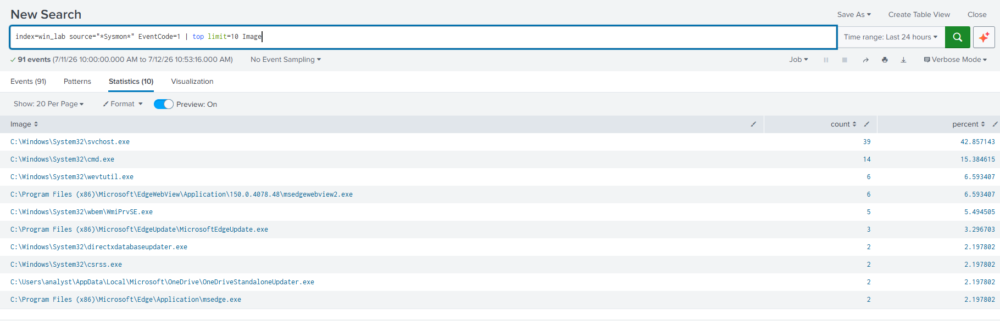
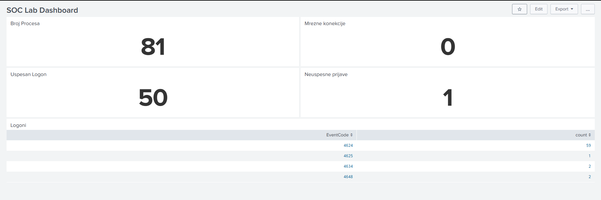

Building my first home SOC lab with Splunk and Sysmon
2026-07
TryHackMe has been great to me. But after a while I noticed something: every room hands you a ready-made lab. The logs are already flowing, the tools are already connected, and my job is just to analyse. I kept wondering: how is all of this actually wired together? If something broke, would I know how to fix it? Could I set this up myself, from nothing?
So I decided to find out, and built my own small SOC lab at home. This post documents what I built, what went wrong along the way (a few things did), and the search query that taught me the most. Fair warning: I'm writing this after finishing the build, so consider it a look back rather than a step-by-step tutorial. Honestly, that might be for the best, because now I know which parts actually mattered.
The goal
Simple on paper: one Windows machine generating detailed logs, one Splunk instance collecting them, and a dashboard where I can see what's happening. In other words, a miniature version of what a real SOC works with every day, small enough to run on my own computer, real enough that nothing is pre-chewed for me.
The architecture
The lab has two halves:
The host machine runs Splunk Enterprise (the free licence), acting as the indexer. This is the "SOC side": it receives, stores and lets me search all the logs.
A Windows 11 virtual machine plays the endpoint, the "employee workstation" being monitored. On it I installed two things: Sysmon, which produces rich, security-focused logs about what the system is doing (far more useful than default Windows logging), and the Splunk Universal Forwarder, a lightweight agent whose only job is to ship those logs to the indexer, over port 9997. For Sysmon I used the popular sysmon-modular configuration by Olaf Hartong instead of writing my own config from scratch, which is standard practice and a great starting point.
So the flow is: things happen on the VM, Sysmon writes them down, the forwarder ships them to Splunk on the host, and I search them there.
What went wrong
This is exactly the experience I couldn't get from a pre-built lab, so I'm sharing it proudly. One thing worth knowing before I do: my degree is in Security Studies, not computer science. Everything computer-related I've taught myself over the past seven months, so things that might be an obvious detail to someone who studied computing were brand new to me.
Problem one is a perfect example. When I created the VM, I didn't even check what type of drives my C and D partitions were. D simply had more free space, so that's where the VM went. :) It turned out D was the HDD, and the disk sat at 100% utilisation, making the whole machine painfully slow. The fix was moving the VM onto the SSD. Lesson learned: virtual machines really, really want fast storage, and now I always check what kind of disk I'm working with first.
Problem two was sneakier. Everything looked installed and running, yet Sysmon logs simply weren't arriving in Splunk. The forwarder service was running, the network connection worked, but nothing flowed. The cause turned out to be permissions: the SplunkForwarder service didn't have the rights to read the Sysmon event channel. Setting the service to run as LocalSystem solved it. And that moment, when Sysmon events finally started appearing in Splunk after all that troubleshooting, was genuinely the highlight of the whole project. Everything clicked into place at once.
Small practical note: I also bumped the VM's RAM up to 6 GB, which made it noticeably more comfortable to work with.
My favourite search
Once logs were flowing, I started learning SPL (Splunk's search language) on my own real data. This is the query I kept coming back to:
index=win_lab source="*Sysmon*" EventCode=1 | top limit=10 Image
Let me break it down, because every part earns its place:
index=win_lab tells Splunk where to look: the index I
created for logs from the lab VM.
source="*Sysmon*" narrows it down to events coming
from Sysmon, ignoring other Windows logs.
EventCode=1 is Sysmon's event for process creation.
Every time any program starts on the VM, this event fires.
The pipe | sends those results into the next command,
and top limit=10 Image counts which values of the
Image field (the full path of the executable that started) appear
most often, and shows the top ten.

The result is a ranked list of the processes that run most on the machine. And here's why I love it: this one query taught me what normal looks like. I got to know the core Windows processes, svchost.exe running constantly, cmd.exe, WmiPrvSE.exe, the Edge updater doing its thing in the background. That baseline is the foundation of detection work: you can't spot the abnormal until you genuinely know the normal.
The dashboard
To pull it together I built a small dashboard with panels for process creation counts, network connections, and logon events, including a breakdown of logon-related event codes (4624 for successful logons, 4625 for failed ones, and so on). The panel titles are in Serbian, my native language, but the idea translates easily: process count, network connections, successful and failed logons.

One detail I'm a little proud of: I deliberately failed a login on the VM, just so the dashboard would have a failed logon to show. If you're going to monitor for something, first make sure you'd actually see it.
What I learned, and what's next
The biggest takeaway isn't any single command. It's that I now understand the internal structure: how a log travels from the moment something happens on an endpoint to the moment it appears in a search result, and where along that path things can break. That understanding simply doesn't come from analysing someone else's ready-made environment.
Next up in the lab: phishing email analysis. Untangling phishing campaigns is the part of SOC work I enjoy most, so I want to bring that into my own environment and see it from the inside. That will be its own post.
If you're learning SOC fundamentals and have a spare machine, I can't recommend this enough. It will frustrate you, at least twice, and that's exactly the point.
← back to all posts